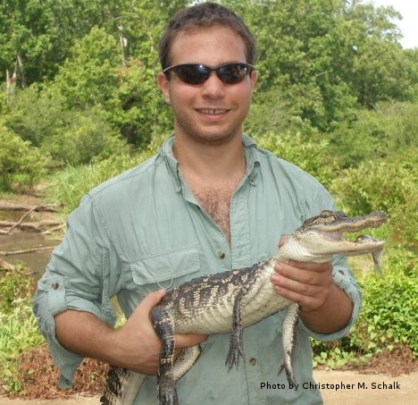

Education:
Doctor of Philosophy (2014) Texas A&M
University, Department of Wildlife and Fisheries, Advised by Dr. Lee
Fitzgerald
Dissertation Title: Multi-Scale Conservation in an Altered Landscape: The Case of the Endangered Arroyo Toad in Southern California
Masters of Science (2010) Texas A&M
University, Department of Wildlife and Fisheries, Advised by Dr. Lee
Fitzgerald
Thesis Title: A Translocated Population of the St. Croix Ground Lizard: Analyzing its Detection Probability and Investigating Its Impacts on the Local Prey Base (Click Here to view as a PDF)
Bachelors of Science (2007) Cornell University, Department of
Natural Resources
A Bit About Me:
I am a Postdoctoral Research Associate at the University of Tulsa, working with Dr. Ron Bonett to understand how life history traits of amphibians may play into effects of climate change. We are conducting this work as part of the NSF-Funded Oklahoma EPSCoR program.
I completed my PhD at Texas A&M University in the Department of Wildlife and Fisheries Sciences. My general research interests are in the fields of landscape ecology and conservation biology, with an emphasis on amphibians and reptiles. My dissertation research focused on understanding how anthropogenic landscape alterations impact amphibians indirectly, through large-scale processes. I conducted this work as part of the Applied Biodiversity Sciences IGERT program (NSF-Funded) at Texas A&M.
The "Links" section includes links related to herpetology, conservation biology, and useful tools. Any photos posted on this website are copyright of me unless otherwise indicated. Please contact me if you wish to use them for public display in any way.
Cheers!
Mike